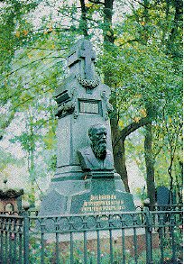

F. M. Dostoevsky

Fyodor Mikhailovich Dostoevsky
John [12:24]
Verily, verily, I say unto you, Except a corn of wheat fall into the ground and die, it abideth alone: but if it die, it bringeth forth much fruit.
Dostoevsky has been a favorite at Middlebury College for students and faculty. This page is devoted to his memory and dedicated to future students of the man many would claim as Russia's greatest novelist.
Since the spring of 1996 students have worked on several projects of interest to those interested in learning more about Dostoevsky and his works.
- A brief biography
- An annotated list of books in English by Dostoevsky at Middlebury.
- An annotated list of books in English about Dostoevsky at Middlebury.
- A series of student papers.
- Reading guides to the great novels
- Crime and Punishment
- The Idiot
- The Devils- also known as The Possessed
- The Brothers Karamazov
- A set of useful links to other pages
There is also information on the spellings of Dostoevsky's name in English, some photos of his apartment and grave in St. Petersburg, and syllabi from spring and fall 1996 courses at Middlebury on Dostoevsky.
The quotation from the Gospel of St. John in the New Testament served as the epigraph for the novel, The Brothers Karamazov and is inscribed on Dostoevsky's tombstone at the Aleksandr Nevsky monastery in his beloved St. Petersburg.
 Middlebury College
Middlebury College
Professor Thomas R. Beyer, Jr.
tom.beyer@middlebury.edu
All contents copyright (C) 1997, Thomas R. Beyer, Jr. All rights reserved.